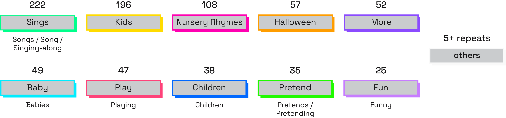
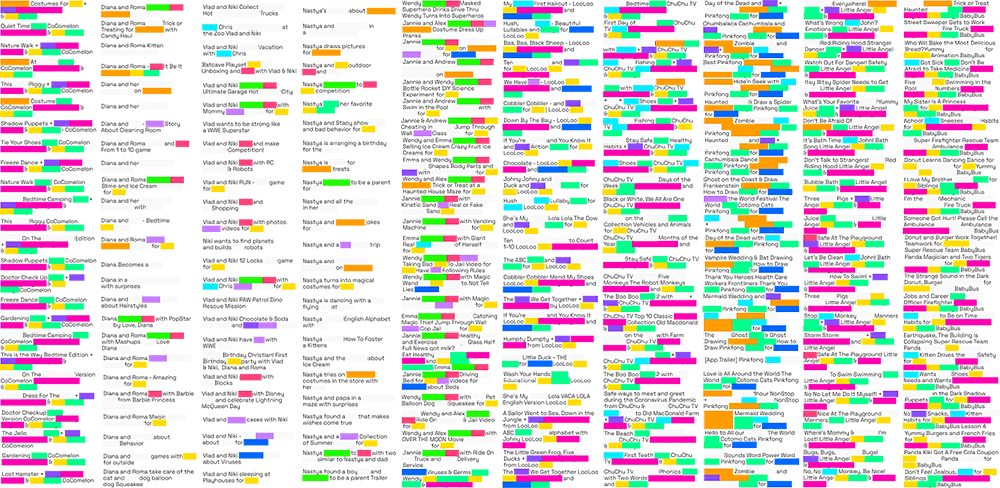
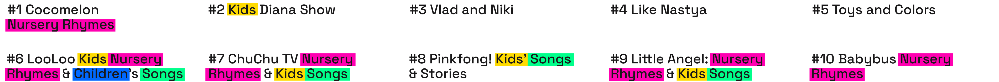
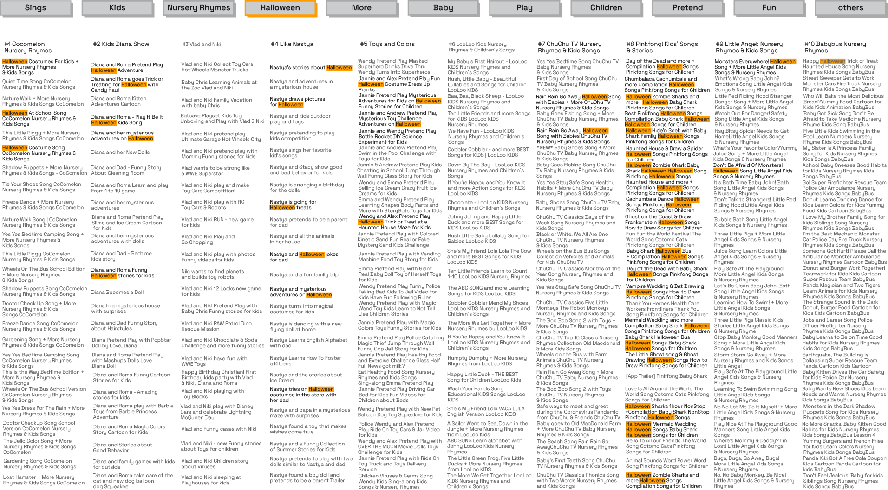

In a period of around one month, taking in consideration each channels’ latest 25 videos, the amount of repetitions detected is huge. Some words have been used hundreds of times. Those are distributed among different channels, clearly showing a similarity in communication strategies.

Repetition is visible not only between channels, but even in consequential titles of one single channel and sometimes in the same title itself. Hiding underlined parts in the visualisation, very few words remain.

It is interesting to see that many of those words are also used in channels’ names: perhaps an excuse to use them in the context of any phrase to remark video property while pleasing the algorithm?

Some words are frequently used together, combined or coupled, in the same line, such as “kids”, “song” and “nursery rhymes”, or “pretend” followed by “play”.

It is possible to argue that some of those words could change over time following periodic trends, to match most popular queries: in this case, since the period studied stands between August and October, the word “Halloween” is therefore used with high frequency.
